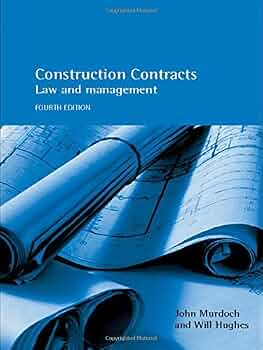
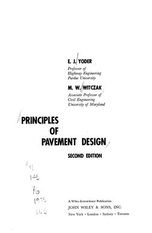
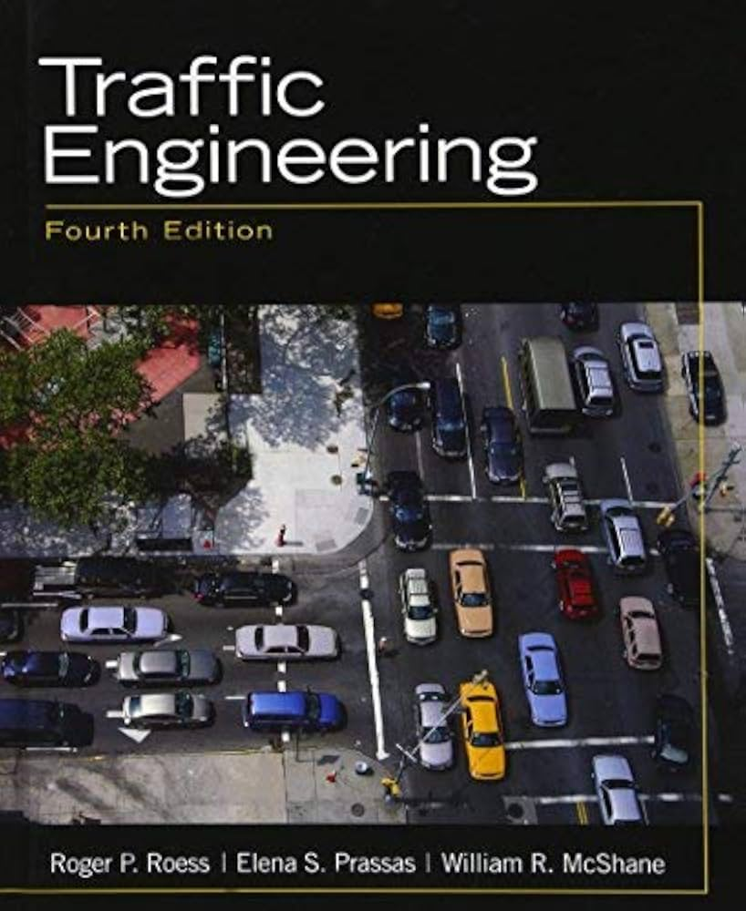
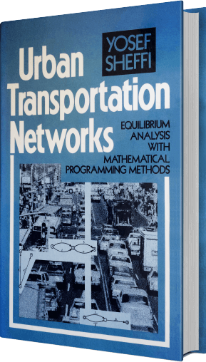
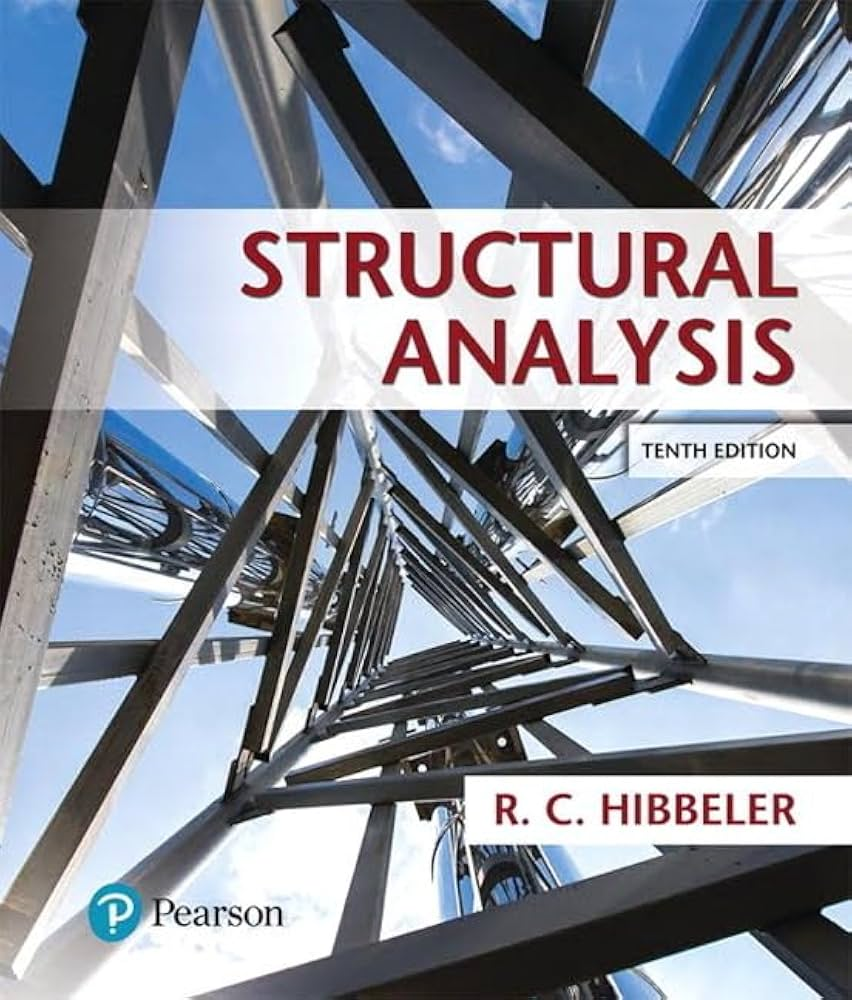
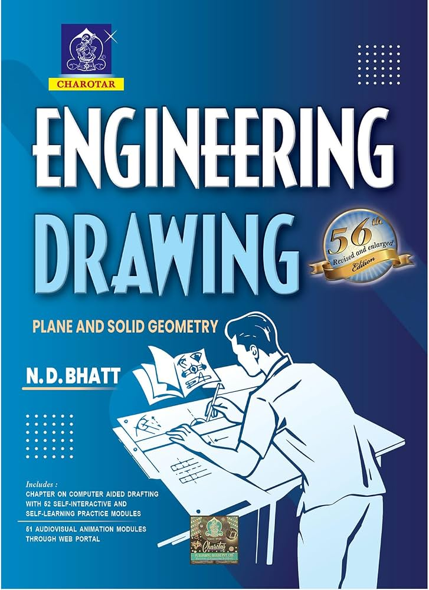
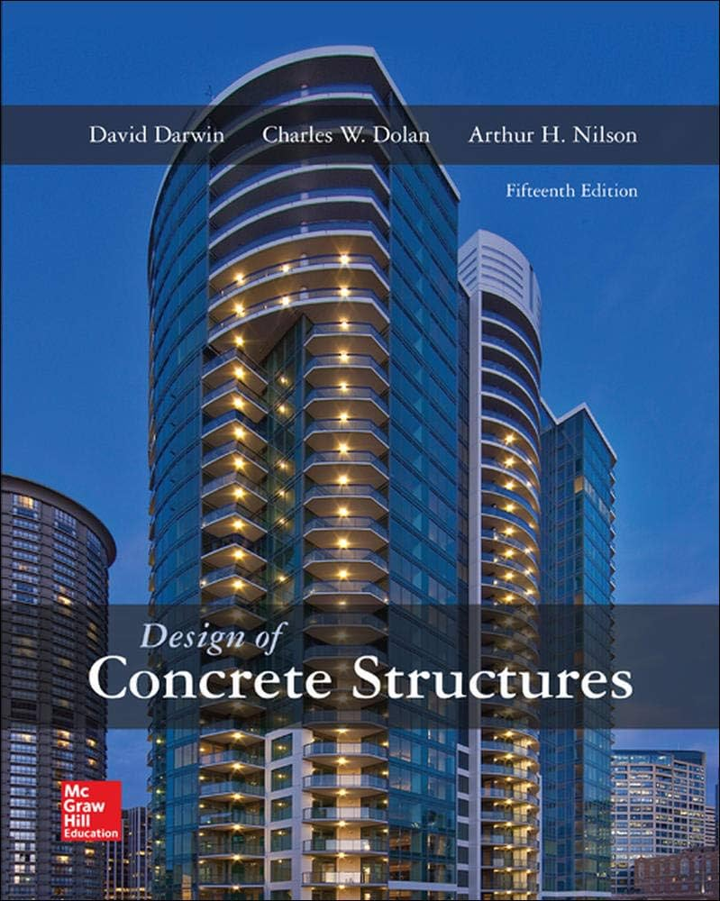
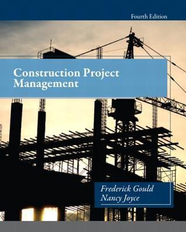
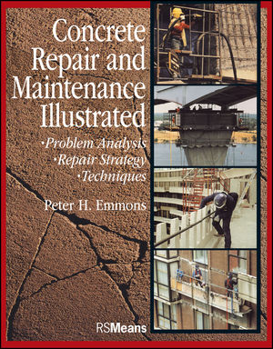
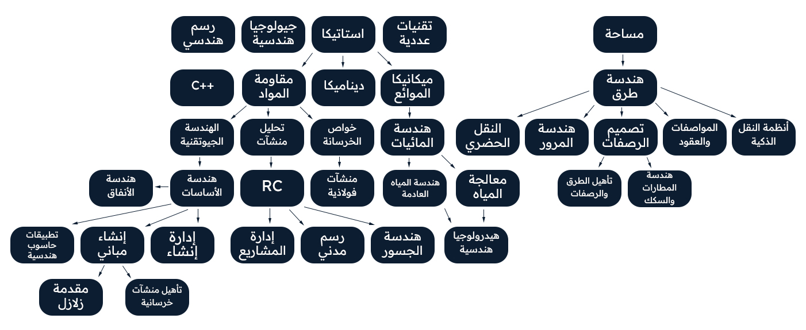

فرع من الهندسة يختص بتخطيط وتصميم وإنشاء وصيانة المنشآت والبنى التحتية التي تخدم الأفراد والمجتمعات، مع مراعاة متطلبات السلامة والاستقرار والاستدامة.
● ملخصات:
ملخص محمد الترك
● شروحات:
- جامعة العلوم والتكنولوجيا
- S&T CAFE
● كتب:
1-Engineering Geology
2-Essentials of Geology — Stephen Marshak

● ملخصات:
ملخص هندسة الطرق
● شروحات:
- H N
● كتب:
1-Traffic and Highway Engineering — Nicholas J. Garber & Lester A. Hoel
● ملخصات:
● شروحات:
- Justice Academy
● كتب:
1-Construction Contracts: Law and Management — Murdoch & Hughes
2-Construction Project Management

● ملخصات:
● شروحات:
- khaled omar
● كتب:
1-Principles of Pavement Design — Yoder & Witczak
2-Pavement Analysis and Design — Yang H. Huang

● ملخصات:
● شروحات:
- التدريسي د. محمود العبيدي
- الهندسة مدني صباحي
● كتب:
1-Traffic Engineering — Roess, Prassas & McShane
2-Traffic and Highway Engineering — Garber & Hoel


● ملخصات:
● شروحات:
- Ahmad Alzoubi
● كتب:
1-Open-Channel Hydraulics — Ven Te Chow
2-Water Resources Engineering — Larry W. Mays
● ملخصات:
● شروحات:
- walaa yamani
● كتب:
1-Concrete Technology
2-Concrete: Microstructure, Properties, and Materials — Mehta & Monteiro
● ملخصات:
● شروحات:
- Ibrahem Okkeh
- Eng / Ibrahim Omar
- CTSCIVIL
● كتب:
1-Structural Analysis — R. C. Hibbeler
2-Structural Analysis — Aslam Kassimali


● ملخصات:
● شروحات:
- civil team1
- civil team2
● كتب:
1-Design of Concrete Structures — Nilson, Darwin & Dolan
2-Reinforced Concrete: Mechanics and Design — Wight & MacGregor

● ملخصات:
● شروحات:
- Mohamed Abouzied
- Ahmed Emad
● كتب:
1-Construction Project Management — Gould & Joyce
2-Project Management for Construction — Chris Hendrickson

● ملخصات:
● شروحات:
- Ali abd elraheem
- bahaa salman
● كتب:
1-Concrete Repair and Maintenance Illustrated — Peter H. Emmons
2-Rehabilitation of Concrete Structures — R. Dodge Woodson

